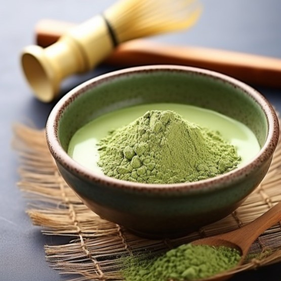

-
녹차
[ nokcha / Green Tea , 綠茶 ]
-
발효시키지 않은 찻잎[茶葉]을 사용해서 만든 차.
차는 보통 가공 방법과, 산화 상태에 따라 녹차, 백차, 청차, 황차, 홍차, 흑차로 나뉘는데
그중에서 산화시키지 않은 찻잎을 사용하여 만든 차를 '녹차'라고 한다.
출처 이동
녹차
우리가 흔히 마시는
'잎 차'
말차

녹차를 갈아 만든
'분말 차'
녹차와 말차는 크게 시음 방법이 다르다.
| 녹차 |
다 자란 찻잎을 열로 볶는 방식.
|
|---|---|
| 말차 |
새순을 증기로 쪄낸 녹차를 가루로 만든 형태.
|